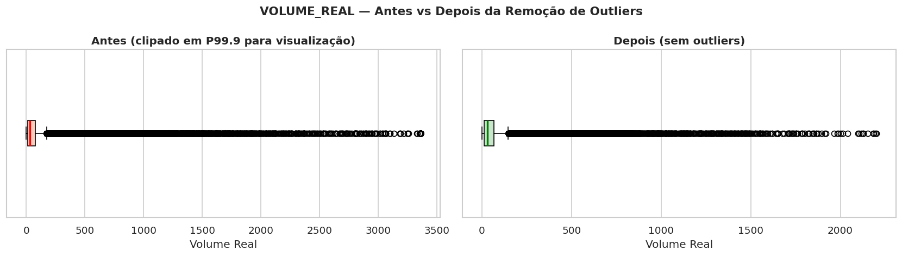
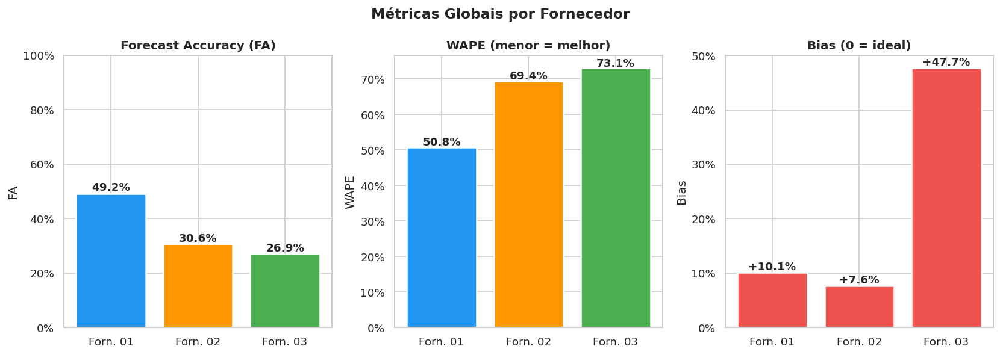
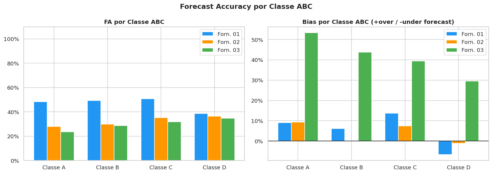
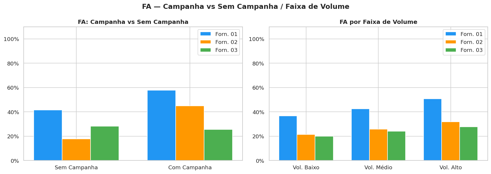
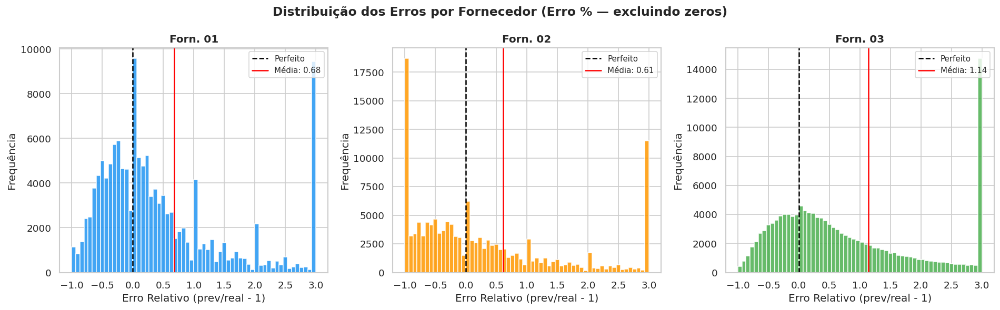
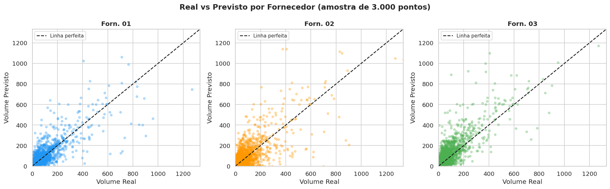
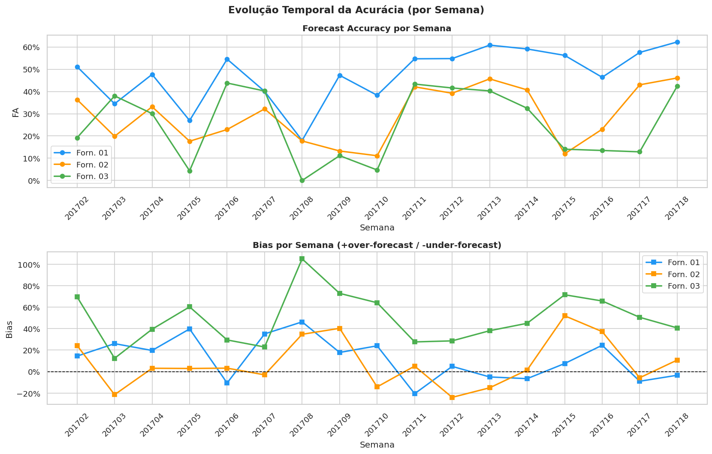
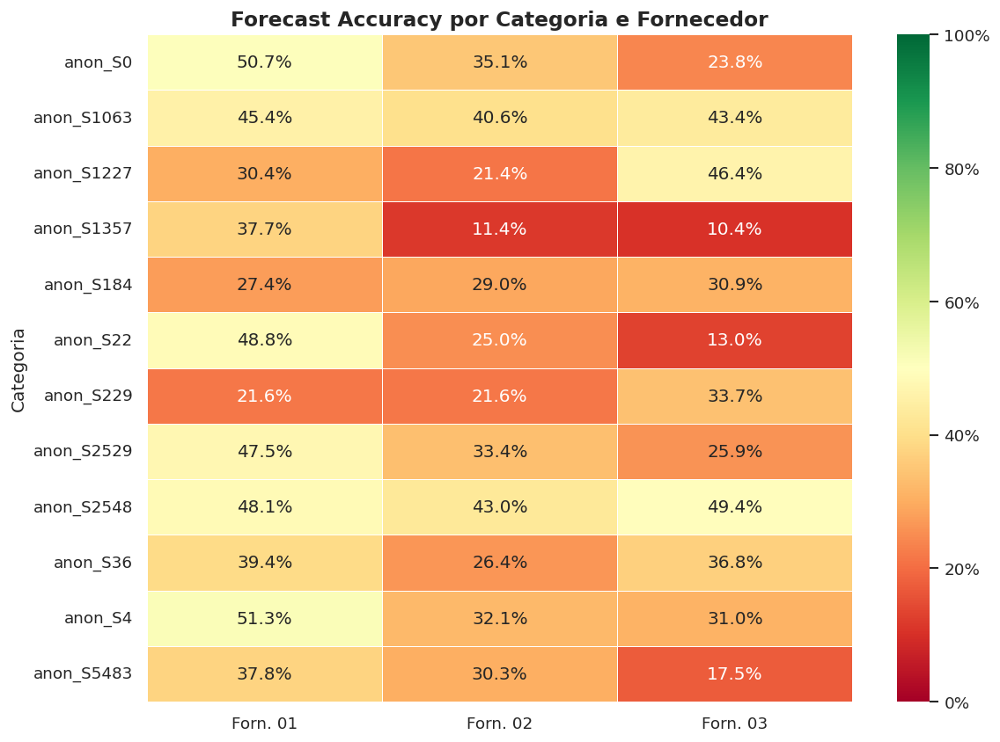
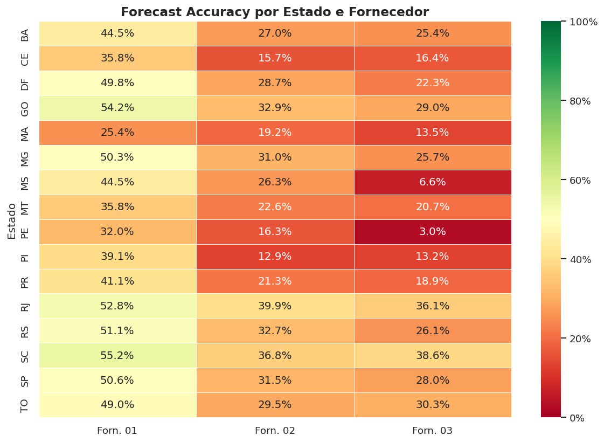
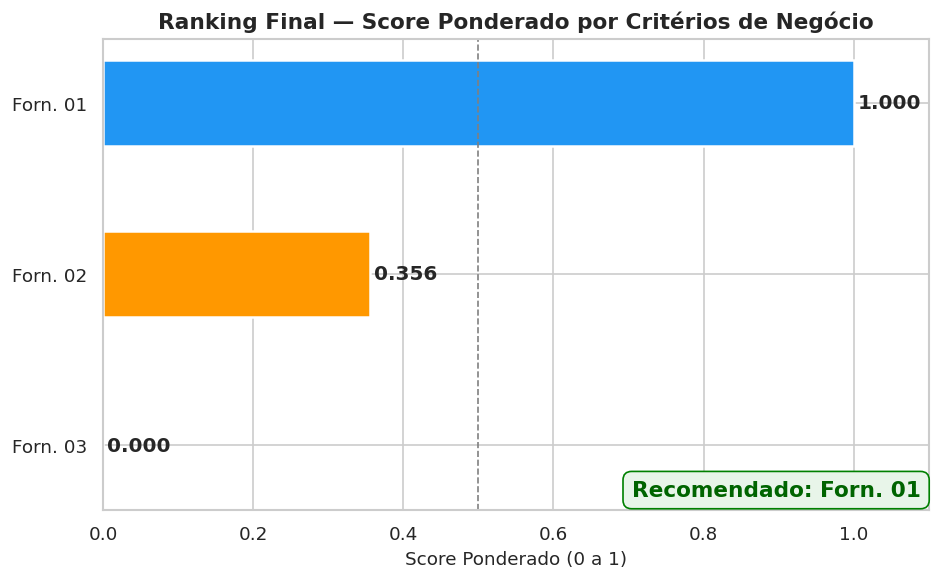

Três fornecedores competiram para prever 17 semanas de vendas reais
em 94 lojas e 197 produtos. Analisamos quem errou menos — e por quê.
Análise com remoção de outliers por IQR/SKU — 139.730 registros válidos avaliados.
A área de planejamento de demanda precisava escolher um novo sistema de previsão. Em vez de confiar só no discurso de cada fornecedor, a empresa deu dados reais para cada um e mediu quem chegou mais perto da realidade.
Cada fornecedor recebeu 3 anos de histórico de vendas e precisou prever 17 semanas futuras — semana a semana, por loja e produto.
A principal métrica é a Acurácia de Previsão (FA) — quanto mais perto de 100%, melhor. Também medimos o Viés (Bias): o fornecedor tende a prever demais ou de menos?
Olhando todos os produtos, lojas e semanas ao mesmo tempo, a diferença entre os fornecedores é enorme.
✓ Melhor em todos os critérios avaliados
⚠ Funcional, mas com acurácia insuficiente
✗ Bias severo — previsões infladas sistematicamente


Na classificação ABC, os produtos Classe A são os de maior valor e volume. Errar a previsão nesses itens custa muito mais — tanto em excesso de estoque quanto em ruptura (falta nas prateleiras).

Semanas com campanha são as mais difíceis de prever — a demanda sobe de forma abrupta. Saber antecipar esses picos é essencial para não faltar produto e não perder vendas.

Saber se o fornecedor tende a prever demais ou de menos é tão importante quanto saber a magnitude do erro. Cada direção tem um custo diferente para a empresa.
O fornecedor previu mais do que o mercado comprou. Consequência: excesso de estoque, capital parado, risco de vencimento/perda.
O fornecedor previu menos do que o mercado comprou. Consequência: ruptura de estoque, perda de vendas e clientes insatisfeitos.


Um bom sistema de previsão precisa ser consistente — não pode ser excelente uma semana e péssimo na outra. Instabilidade gera imprevisibilidade operacional.
✓ Previsões mais consistentes semana a semana
⚠ Variações moderadas ao longo do período
✗ Alta instabilidade e bias sistemático elevado

Um bom sistema precisa funcionar bem em todo o portfólio e em todas as regiões — não apenas em alguns produtos ou estados privilegiados.


Combinamos todas as métricas com pesos que refletem o impacto real no negócio. Itens de maior valor e semanas de campanha receberam peso maior.
| Critério de Avaliação | Peso | Justificativa |
|---|---|---|
| Acurácia Global (FA) | 30% | Base do desempenho geral do portfólio |
| Acurácia nos Itens Classe A | 25% | Maior impacto financeiro por unidade errada |
| Acurácia em Semanas de Campanha | 20% | Capacidade de capturar picos de demanda |
| Acurácia nos Top-20 SKUs | 15% | SKUs de maior volume e criticidade operacional |
| Consistência Semanal | 10% | Estabilidade e previsibilidade do modelo |

Com base em todas as métricas e dimensões de negócio avaliadas (após remoção de outliers por IQR por SKU — 139.730 registros válidos), o fornecedor recomendado para o sistema de previsão de demanda é:
Fornecedor 01Com FA global de 49,2% — a maior entre os três — e o único capaz de prever picos promocionais com acurácia (57,9% com campanha, bias de -0,06%). Lidera em todos os segmentos: Classe A, Top-20 SKUs, todas as categorias e estados. Embora a FA de ~49% ainda esteja abaixo do padrão ideal de mercado (70–80%), a vantagem sobre os concorrentes é expressiva e consistente.
Recomendação adicional: negociar com o Fornecedor 01 um plano de melhoria contínua da acurácia como cláusula contratual, com metas de FA por trimestre e penalidades por bias acima de 10%.